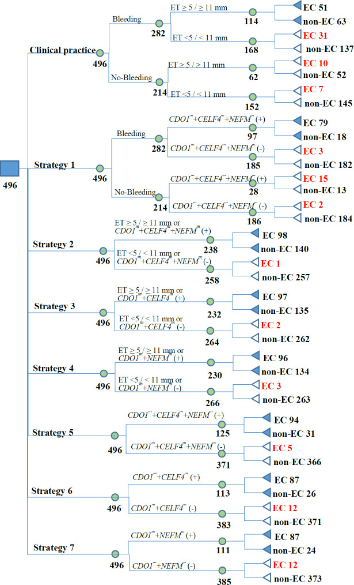

1Background & Objective
- Problem: no guideline-recommended biomarkers for EC screening; biopsy invasive & costly.
- Objective: develop & validate hypermethylated-gene panel on cervical cytology (EndoMethy-I).
2Study Design — Three Cohorts
40
exploratory (21 EC)
347
training
149
validation
- Exploratory: 40 paired endometrial tissue + cervical scrapings → 11 candidate genes (array).
- Split: suspected-EC women randomized 7:3 into training/validation.
- Panel: CDO1 + CELF4 + NEFM hypermethylation from cervical cytology.
- Model: decision tree with methylation + bleeding + TVS endometrial thickness.
- Reference: endometrial histopathology (gold standard).
11
candidate genes screened
3
gene panel
7:3
train:valid split
Se 94.6%
valid · panel
Sp 92.8%
valid · panel
0.93
CDO1 AUC · train
- Why cervical cells: non-invasive, ample material, mirrors endometrial methylation.
- Young women: missed cotest cases were Lynch-related (31.8/32.2 y) — genetics-first pathway needed.
- Inclusion: suspected EC symptoms or high-risk factors (obesity, diabetes, Lynch).
- Sample: cervical scrapings collected for cytology-based methylation assay.
- Statistics: Lasso logistic for gene selection; ROC/AUC; decision tree.
- Miss analysis: strategy-level missed EC cases & hysteroscopy rates compared.
Single-center prospective observational study; three cohorts for discovery → training → validation; methylation-only keeps hysteroscopy at 25.0%.
3Gene Discovery — AUC Ranking
- 11-gene screen: top-3 (CDO1/NEFM/CELF4) taken forward to the panel.
4Validation — 3-Gene Panel
94.6%
Se (85.1–98.9)
92.8%
Sp (89.3–95.5)
TVS+
Sp ↑ · Se ↓
- Excellent accuracy: CDO1/CELF4/NEFM panel — Se 94.6%, Sp 92.8% in validation.
- TVS addition: endometrial thickness improves specificity slightly, at cost of very low sensitivity.
5Decision-Tree Strategies

Fig. Decision tree — clinical practice vs 7 methylation-based strategies (missed EC cases & hysteroscopy rates).
25.0%
hysteroscopy · methylation only
5 missed
methylation-only
~50%
hysteroscopy · cotest
2 missed
cotest (young Lynch)
- Methylation-only: low hysteroscopy rate (25%), 5 missed cases.
- Cotest strategies: fewest missed (2, Lynch-related young women) at ~50% hysteroscopy.
- No-marker practice: unacceptable high missed-diagnosis rates.